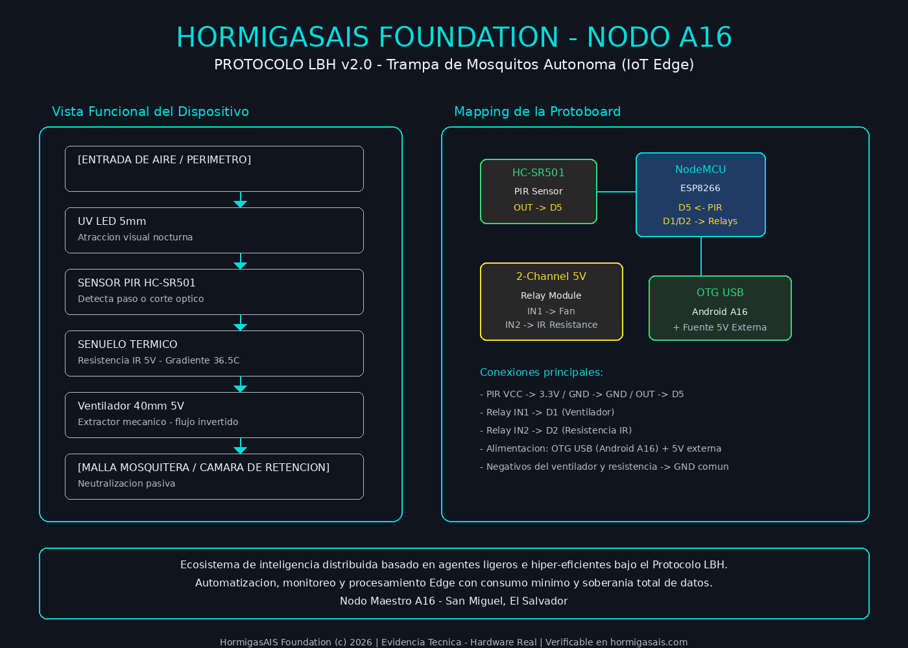

Most content-verification and edge-computing stacks today assume a baseline dependency: a cloud provider, a centralized API, or a third-party service sitting between your data and the claim that it's authentic. That dependency is convenient, but it's also a single point of failure and a single point of control.
The question I kept returning to while building HormigasAIS was simple: can a verification system be sovereign? Not "self-hosted on someone else's cloud," but genuinely independent — running on infrastructure you own, from a device as unconventional as a phone.
HormigasAIS approaches this with a node-based architecture rather than a service-based one. Three pieces anchor it:
barrera.js — an ethical/logical filter layer that sits between raw input and the system's accepted state.humano.js — a small symbolic module declaring the human-language layer of the project: HormigasAIS = {{lenguaje-humano}}.None of this requires a data center. The full development loop — writing, testing, sealing, deploying — happens from an Android device running Termux.
The repository Thrumanshow/HormigasAIS started as a set of governance files. Getting it live took: enabling GitHub Pages from the main branch root and documenting the repo properly (README.md, LICENSE, GOVERNANCE.md, STATUS.md, and MANIFIESTO.md).
The entire sequence — clone, edit, verify, commit, push — ran from Termux on a Samsung A16.